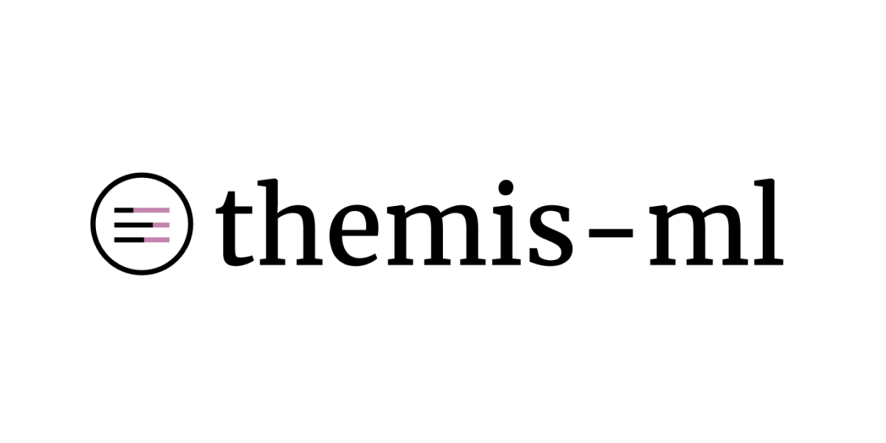
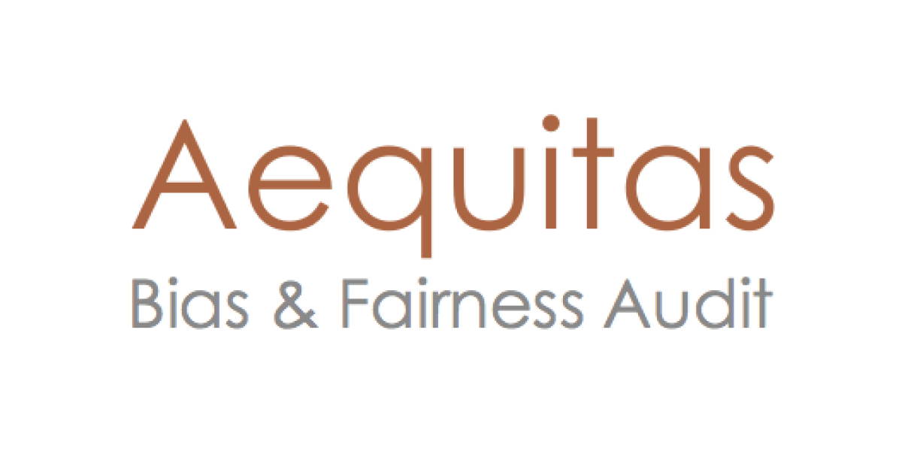

A toolkit for measuring and mitigating bias in machine learning models, providing algorithms for fairness pre-processing, in-processing, and post-processing.

A library focused on bias detection and mitigation in machine learning models, offering tools to identify and correct biases.

A tool for identifying and analyzing bias and fairness in decision-making processes, helping to ensure equitable outcomes across groups.
 }})
A tool that uses representative sampling to evaluate and improve the fairness performance of machine learning models by detecting and correcting discriminatory inputs.